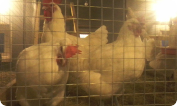
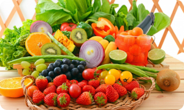

Птичий дворик
Сказать, что у меня имеется свое хозяйство я не могу, так как мой не большой курятник с маленьким выгулом назвать...

Польза овощей
Овощи и фрукты – действительно кладезь витаминов и минералов. Они богаты кальцием, магнием, железом, цинком... витаминами А, С, Е и К...

Польза овощей
Вот с этого всё и началось. Соседка начала рассказывать какие вкусные утки. Я уговорила мужа купить уток, и попутно... захватили ещё и гусиков...
Контакты